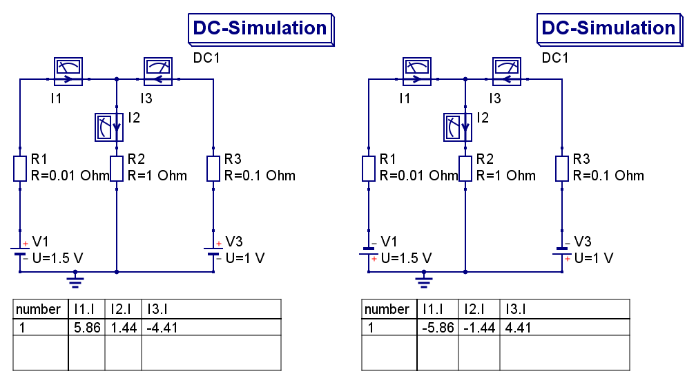
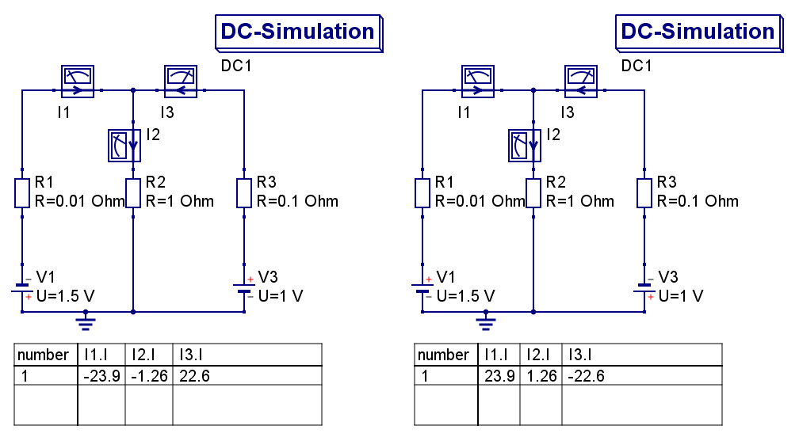

geg: P2 = 1 W, P3 = 2 W (beide für UN = 12 V), U0 = 10 V (= Uges), R1 = 1 Ω
Die einzelnen Widerstände, lassen sich wie folgt berechnen:
\[ \begin{align*} P_2 &= U_N \cdot I_N \\ 1 W &= 12 V \cdot I_N \\ I_N &= \frac{1 W}{12 V} \\ I_N &= \frac{1}{12} \text{ } \left[ \frac{W}{V} = \frac{V \cdot A}{V} = A \right] \\ \\ \\ P_2 &= R_2 \cdot I_N^2 \\ R_2 &= \frac{P_2}{I_N^2} \\ R_2 &= \frac{1 W}{\frac{1}{144} A^2} \\ R_2 &= 144 \text{ } \left[ \frac{W}{A^2} = \frac{V \cdot A}{A \cdot A} = \frac{V}{A} = \Omega \right] \\ \\ \\ P_3 &= U_N \cdot I_N \\ 2 W &= 12 V \cdot I_N \\ I_N &= \frac{2 W}{12 V} \\ I_N &= \frac{2}{12} = \frac{1}{6} \text{ } \left[ \frac{W}{V} = \frac{V \cdot A}{V} = A \right] \\ \\ \\ P_3 &= R_3 \cdot I_N^2 \\ R_3 &= \frac{P_3}{I_N^2} \\ R_3 &= \frac{2 W}{\frac{1}{36} A^2} \\ R_3 &= 72 \text{ } \left[ \frac{W}{A^2} = \frac{V \cdot A}{A \cdot A} = \frac{V}{A} = \Omega \right] \end{align*} \]Nun lässt sich der Gesamtwiderstandberechnen:
\[ \begin{align*} R_{ges} &= R_1 + (R_2 || R_3) = R_1 + R_{2,3}\\ \\ \frac{1}{R_{2,3}} &= \frac{1}{R_2} + \frac{1}{R_3} \\ \frac{1}{R_{2,3}} &= \frac{1}{144} \Omega + \frac{1}{72} \Omega\\ \frac{1}{R_{2,3}} &= \frac{3}{144} \Omega \\ R_{2,3} &= \frac{144}{3} = 48 \Omega \\ \\ R_{ges} &= 1 \Omega + 48 \Omega = 49 \Omega \end{align*} \]Mit den Ergebnissen können wir die Spannung U1 errechnen:
\[ \begin{align*} U_1 &= \frac{R_1}{R_{ges}} \cdot U_{ges} \\ U_1 &= \frac{1 \Omega}{49 \Omega} \cdot 10 V\\ U_1 &= \frac{10}{49} V \\ U_1 &= 0,204082 V \end{align*} \]Das Voltmeter zeigt also 0,204082 Volt an.
Die Formel für den Gesamtstrom:
\[ \begin{align*} I_{ges} &= \frac{U_{ges}}{R_{ges}} \\ I_{ges} &= \frac{10 V}{49 \Omega} \\ I_{ges} &= \frac{10}{49} \text{ } \left[ \frac{V}{\Omega} = A \right]\\ I_{ges} &= 0,2041 A \end{align*} \]Der Gesamtstrom beträgt 0,2041 Ampere.
geg: U1 = 1,5 Volt, U3 = 1 Volt, R1 = 10 mΩ = 0,01 Ω, R2 = 1 Ω, R3 = 100 mΩ = 0,1 Ω
Der Knotensatz für diese Schaltung lautet \(I_1 - I_2 + I_3 = 0\). Das heißt \( I_1 = I_2 - I_3 \).
Für die Maschensätze gilt folgendes:
\[ \begin{align*} \text{Masche 1: } &U_1 - I_1 \cdot R_1 - I_2 \cdot R_2 = 0\\ \text{Masche 2: } &U_3 - I_3 \cdot R_3 - I_2 \cdot R_2 = 0 \\ \Rightarrow &U_1 = I_1 \cdot R_1 + I_2 \cdot R_2 = (I_2 - I_3) \cdot R_1 + I_2 \cdot R_2\\ \Rightarrow &U_3 = I_3 \cdot R_3 + I_2 \cdot R_2 \\ \end{align*} \]Mit eingesetzten Werten:
\[ \begin{align*} \text{M 1: }1,5 V &= 0,01 \Omega \cdot (I_2 - I_3) + 1 \Omega \cdot I_2\\ 1,5 V &= 0,01 \Omega \cdot I_2 + 1 \Omega \cdot I_2 - 0,01 \Omega \cdot I_3 = 1,01 \Omega \cdot I_2 - 0,01 \Omega \cdot I_3\\ \\ \text{M 2: }1 V &= 0,1 \Omega \cdot I_3 + 1 \Omega \cdot I_2\\ \end{align*} \]Jetzt kann man alles in eine Matrix eintragen:
| I2 | I3 | Ergebnis | |
|---|---|---|---|
| M I | 1,01 Ω | - 0,01 Ω | 1,5 V |
| M II | 1 Ω | 0,1 Ω | 1 V |
| M I + 0,1*M II | 1,11 Ω | 0 | 1,6 V |
Nun lässt sich I2 einfach ausrechen:
\[ \begin{align*} 1,11 \Omega \cdot I_2 - 0 \cdot I_3 &= 1,6 V \\ 1,11 \Omega \cdot I_2 &= 1,6 V \\ I_2 &= \frac{1,6}{1,11} \left[ \frac{V}{\Omega} = A \rightarrow V = A \cdot \Omega \right]\\ I_2 &= 1,44 A \\ \\ \\ 1 V &= 1,44 \Omega \cdot A + 0,1 \Omega \cdot I_3\\ I_3 &= \frac{1 - 1,44 V}{0,1 \Omega} \\ I_3 &= \frac{-0,44}{0,1} \left[ \frac{V}{\Omega} = A \right] = -4,4 A\\ \\ \\ I_1 &= I_2 - I_3 = 1,44 A - (-4,4) A = 5,84 A \end{align*} \]Deutlich zusehen ist, dass es in dieser Schaltung immer mindestens einen Strom mit negativen Vorzeichen gibt. Dies erklärt sich durch die verschiedenen Spannungen. Dadurch entsteht immer ein Ausgleichsstrom, da U1 stärker ist als U3. Deshalb sollte man ungleiche Spannungsquellen in Parallelschaltungen vermeinden.
----------------------------------------------------------------------------------------------------------------------
Dreht man jetzt z.B. den Richtungssinn der Masche 1 um, ergibt sich folgender Maschensatz:
\[ \begin{align*} \text{Masche 1: } -&U_1 + I_1 \cdot R_1 + I_2 \cdot R_2 = 0\\ \text{Masche 2: } &U_3 - I_3 \cdot R_3 - I_2 \cdot R_2 = 0 \\ \Rightarrow &U_1 = I_1 \cdot R_1 + I_2 \cdot R_2 = (I_2 - I_3) \cdot R_1 + I_2 \cdot R_2\\ \Rightarrow &U_3 = I_3 \cdot R_3 + I_2 \cdot R_2 \\ \end{align*} \]Äquivalent dazu wenn man die Maschenrichtung in Masche 2 umkehrt:
\[ \begin{align*} \text{Masche 1: } &U_1 - I_1 \cdot R_1 - I_2 \cdot R_2 = 0\\ \text{Masche 2: } -&U_3 + I_3 \cdot R_3 + I_2 \cdot R_2 = 0 \\ \Rightarrow &U_1 = I_1 \cdot R_1 + I_2 \cdot R_2 = (I_2 - I_3) \cdot R_1 + I_2 \cdot R_2\\ \Rightarrow &U_3 = I_3 \cdot R_3 + I_2 \cdot R_2 \\ \end{align*} \]Und Vollständigkeitshalber auch die Maschensätze bei Umkehrung beider Maschenrichtungen:
\[ \begin{align*} \text{Masche 1: } -&U_1 + I_1 \cdot R_1 + I_2 \cdot R_2 = 0\\ \text{Masche 2: } -&U_3 + I_3 \cdot R_3 + I_2 \cdot R_2 = 0 \\ \Rightarrow &U_1 = I_1 \cdot R_1 + I_2 \cdot R_2 = (I_2 - I_3) \cdot R_1 + I_2 \cdot R_2\\ \Rightarrow &U_3 = I_3 \cdot R_3 + I_2 \cdot R_2 \\ \end{align*} \]Fazit: Es ändert sich im Grunde nichts an den Stromrichtungen. Dafür müsste man schon die Spannungsquellen umdrehen. Dreht an beide um, bleiben die Stromstärken gleich, und die Stromrichtungen kehren sich um. Dreht man jeweils eine um, ändern sich Strom´richtung und -stärke:
Ausrichtung beider Spannungsquellen gleich
Ausrichtung beider Spannungsquellen verschieden
Setzt man nun in einer Parallelschaltung zwei Primär- oder Sekundärelemente ein, welche jeweils unterschiedeliche Spannungen haben, führt das zu einem hohen Verbrauch und einer schnellen Endladung der Zellen, was mit Batterien sehr unökologisch und mit Akkus unökonomisch wäre. Sind die Spannungsquellen dazu noch umgekehrt ausgerichtet (im Fachjargon heißt es dann falsch gepolt), kann es auch zu Kurzschlüssen kommen.
Fazit: Just don't! Not worth it!
(Quellen: de.wikipedia.org - Parallelschaltung, hobby-bastelecke.de - Spannungsquellen in Parallelschaltungen